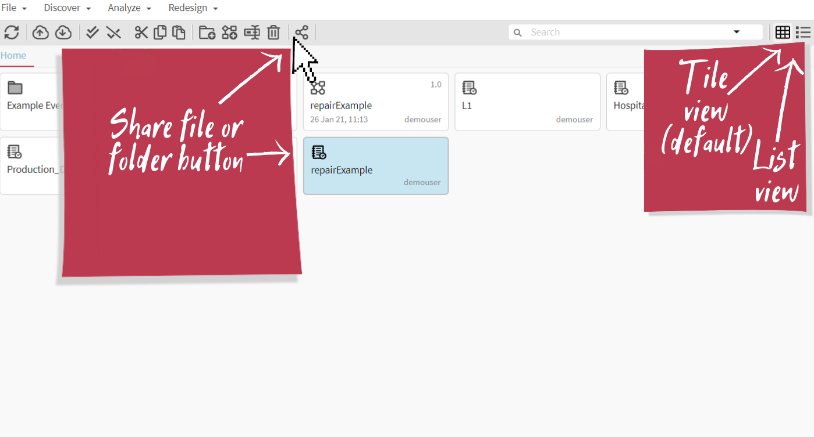

Quick start¶
Apromore is a leading provider of open-source solutions for process mining and AI-driven business process improvement. Our vision is to democratize process mining by enabling organizations to achieve digital transparency and operational excellence.
Apromore Portal¶
The Apromore Portal is the first and primary interface that users access. One can navigate the workspace folders and perform various actions through the available plugins.

The Apromore workspace containing files and folders appears after successfully logging in. Different icons represent a process model and log. To select a file, click on it. To add a new file, click on Upload. To save a file, click on Download.
Note
We can also select the Upload and Download options from the File menu drop-down.


We can select and unselect all files simultaneously by clicking on Select/Unselect buttons for ease of access. To search a file, use the Search bar.

To remove the selected file/folder from the workspace, click on Cut while to create a duplicate, click on Copy. To paste the file/folder in the desired directory, click on the Paste button. To rename or delete a file/folder – select it and click on Rename or Delete.

To add a new folder to the workspace, click on the Create folder button. The created folder appears on the My Workspace panel.

To open the log – double-click on the file, and by default, it opens in the process discover plugin.
Process discoverer¶
When first opened, the Process Discoverer displays a process map of the event log. By default, each node in the process map represents an activity. Each arc represents a directly-follows relation between two activities. We can tune the number of nodes and arcs in the process map using the Abstraction sliders. To change the percentage of visible nodes, use the nodes slider. When the nodes slider is set to 100%, the Process Discoverer displays all the nodes. When the nodes slider is 0%, we only see one node. Similarly, when the Arcs slider is set to 100%, we can see all the arcs, and if we set it to 0%, we see a minimal number of arcs, in such a way that all the selected nodes are displayed, and every node is on a path from the start node to the end node of the process map. When we move the Abstraction sliders from right to left, Apromore gradually removes elements starting from the least frequent one to the most frequent one. By clicking on the Invert Ordering, we can ask Apromore to do the opposite. This means that as we move a slider from right to left, Apromore will remove the most frequent elements and keep the less frequent ones. If we select the Average duration option in the Abstract drop-down menu, Apromore will remove nodes and arcs based on their duration (instead of their case frequency).
If we wish to observe the branching points, rework loops, and parallel activities in the process, it is better to switch to the BPMN view. When we switch to the BPMN view, Apromore tries to discover parallel relations between activities. We can ask Apromore to find less parallelism or more parallelism by using the Parallelism slider. When the Parallelism slider is at 0%, Apromore will not display any parallel gateway. When it is set to 100%, Apromore tries to discover as much parallelism as possible, given the selected level of arcs abstraction. By default, the Process Discoverer displays the case frequency of each activity and each arc. We can change the statistics overlaid on top of each activity or arc by using the drop-down menus in the Overlay section of the Process Discoverer.

We can save the finished file in a BPMN format or as a filtered log after applying different filters. To see both tasks and gateways and explore decision points, switch to BPMN mode.
Use the Log statistics panel to check the Case variants, the Events, and Activities one by one.

For convenience, there is also a possibility to change the layout or fit the model.
Filter¶
An alternative way to select a subset of cases or processes and retain specific cases is to use Filter.

To filter logs, click on the Filter.

Dashboards¶
To open the dashboard, go back to the Portal, select at least one event log and select the View performance dashboard option from the Analyze menu drop-down.
Note
Select multiple event logs to compare them in the dashboard.

To create a dashboard from an existing dashboard or create a dashboard from scratch, click on the ‘+’ button. To download the current view of the dashboard, click on the Download report button.

To customize view of the dashboard, click on the Change style button and select from different styling options. We can choose to reset view of the dashboard by clicking on the Reset view button.
Note
We can choose to reset the current view or all the views.
To auto-save a file, click on the Save dashboard button.

To enlarge the specific area - click on the chart and select the area. As soon as you release the mouse, the tool zooms into the selected part of the chart. To zoom out and see the entire chart again, click on Reset Zoom.
Process Animation¶
To trigger log animation from the Portal, select at least one event log and a process model and click on the Animate logs from the Analyze menu drop-down.

Each case is captured by one token and is displayed on the process map/BPMN model. A bottleneck can be identified depending on how the different tokens traverse process map/BPMN model.

Note
If the token goes around an activity’s border, this indicates that the particular activity is skipped in that process case.
Administration¶
To manage the item’s access right, select a folder, event log, or model in the Portal and click Share file or folder.

Select the user and assign the desired permission. Click on Apply Changes to save the changes.